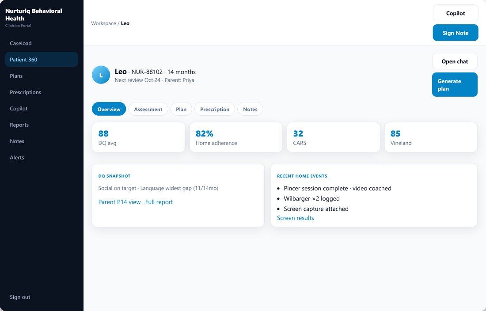
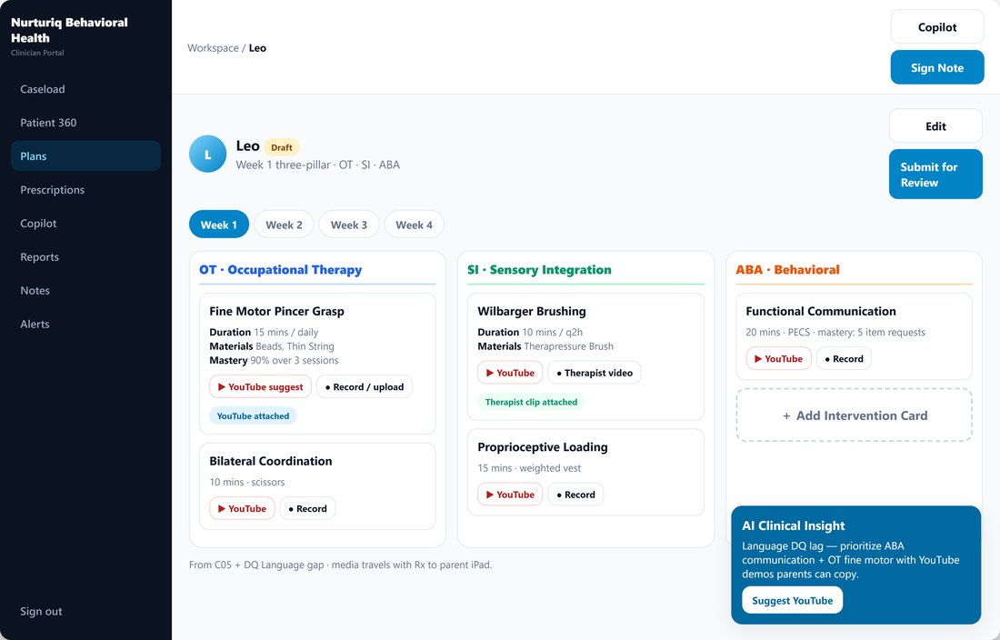
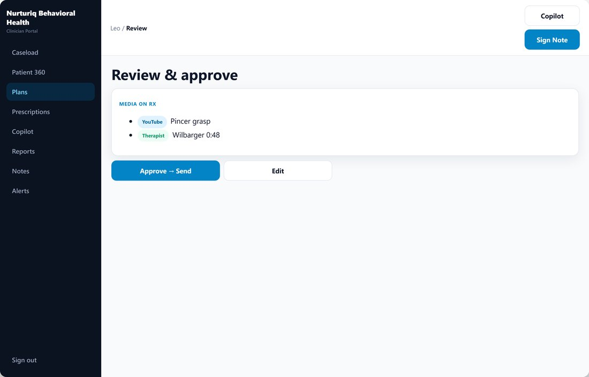
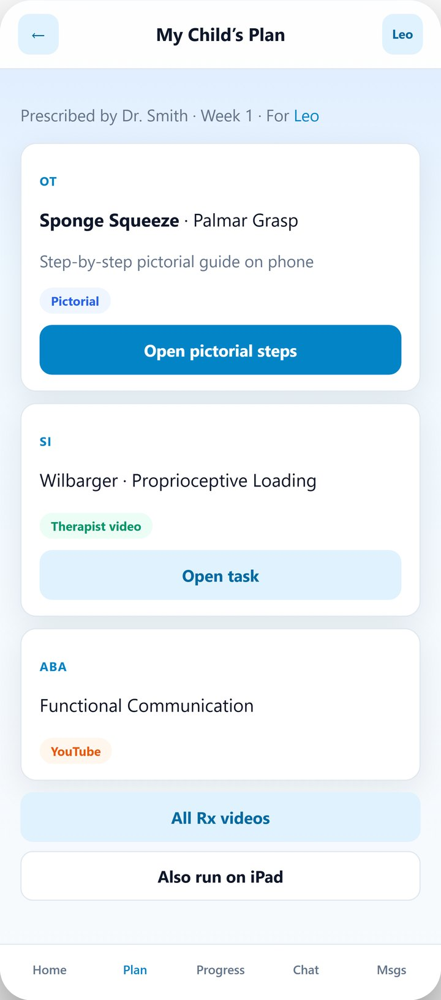
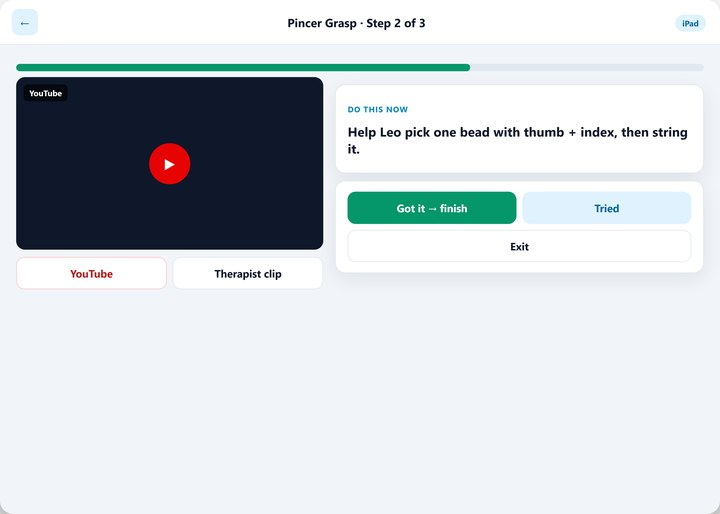
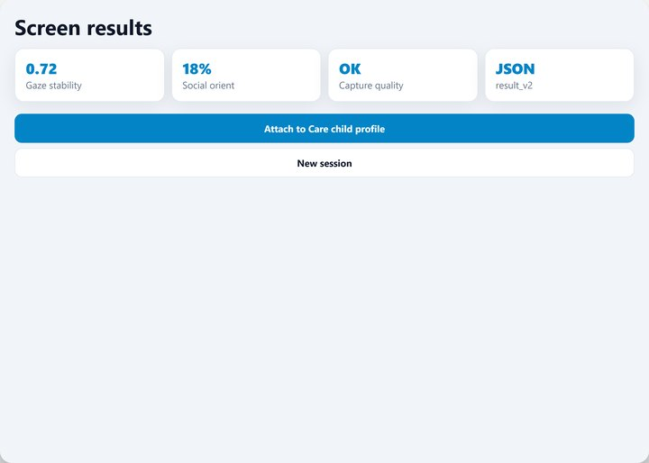
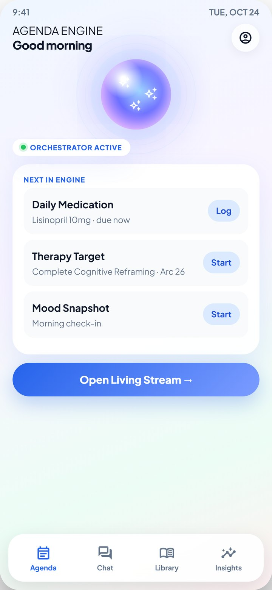
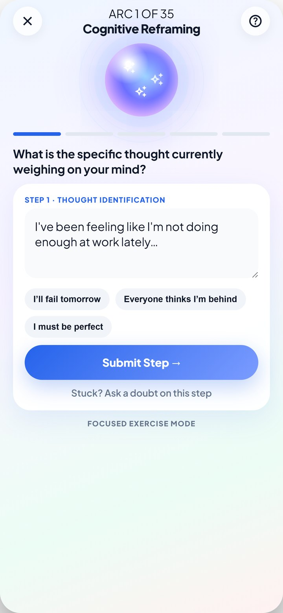
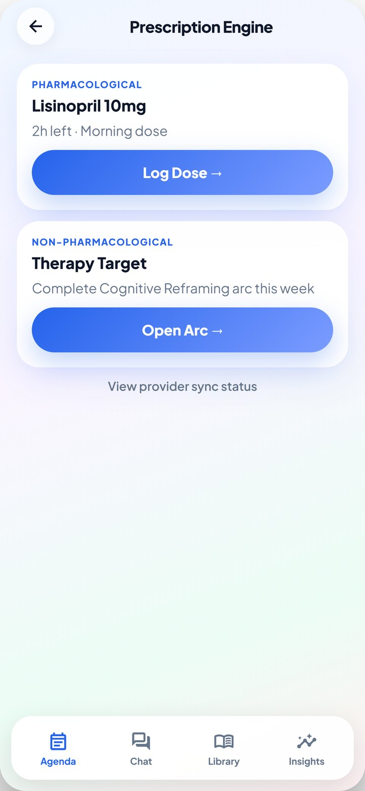
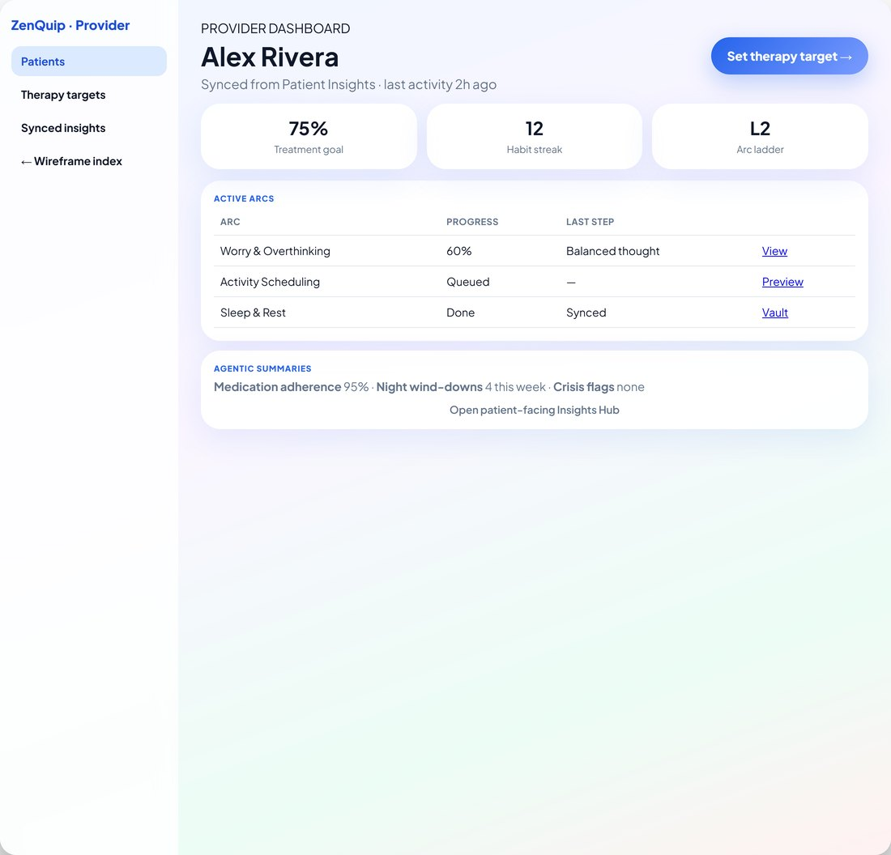

Child & adolescent psychiatry
ASD, ADHD, specific learning disorders and the wider neurodevelopmental spectrum — assessment, family guidance and longitudinal care.
Evidence-based psychiatry, engineered for reach.
Two clinical AI products built from the ground up, an ICD-11 fine-tuning programme — and a working clinic and classroom in child & adolescent psychiatry.
The work
Two products taken from blank page to shipping, one research programme, and the clinical practice that keeps all three honest.
A patient app and a clinician dashboard for adult mental health, live and shipping — 35 therapeutic arcs, 487 guided exercises, prescriptions syncing both ways.
See the system → 02 Product · built from scratchNeurodevelopmental care end to end: structured assessment becomes a clinician-approved OT, SI and ABA home programme, with a webcam-biomarker screening track in research.
See the system → 03 Research · supervised fine-tuningSupervised fine-tuning of a language model to conduct hierarchical, differential-oriented psychiatric interviews, grounded in ~1,200 questions specified against WHO CDDR.
See the system → 04 Clinical & academicAssistant Professor teaching psychiatry to undergraduates and postgraduates under CBME, and consultant child & adolescent psychiatrist running the Guidance Clinic.
See the practice →Profile
Psychiatrist and academic with ten years spanning inpatient and outpatient care, undergraduate and postgraduate teaching, and high-impact research. Alongside the clinic I build clinically grounded AI systems for psychiatry: an ICD-11 conversational assessment engine, Nurturiq for neurodevelopmental assessment through to home therapy, and ZenQuip for structured adult mental-health programmes with live patient–clinician sync.
Principal Investigator for the All India LLM / ICD-11 synthetic clinical dialogue fine-tuning group, and mentor on the Georgia Tech Create-X ASD technology programme. Recipient of the Solanki Award for Best Research (2024) from the Industrial Psychiatry Journal for work on AI-based suicide prevention.
Focus areas
ASD, ADHD, specific learning disorders and the wider neurodevelopmental spectrum — assessment, family guidance and longitudinal care.
Beck Institute-trained cognitive behavioural therapy; CBT + ERP for OCD, CBT for anxiety in children and adolescents, behaviour therapy and sensory integration liaison.
Deep learning for early risk detection, LLM fine-tuning on ICD-11-aligned clinical dialogue, and AI-generated care plans delivered in a family's native language.
Clinical curriculum design for digital mental health: worksheets, CBT pathways, session templates and AI-assisted continuity between appointments.
Motivational care, nicotine replacement therapy, pharmacotherapy and counselling — leading a dedicated tobacco cessation clinic alongside ECT services.
Systematic reviews and meta-analyses registered with PROSPERO; R, SPSS and JAMOVI; co-editor of a statistics textbook written for practising clinicians.
AI & machine learning
Not a psychiatrist who reads about machine learning — a psychiatrist who completed the coursework, then applied it inside the clinic. Every credential below carries a public verification link.
The three-course specialization taught by Andrew Ng: supervised learning (linear and logistic regression, neural networks, decision trees), unsupervised learning (clustering, anomaly detection), recommender systems and reinforcement learning.
Andrew Ng's deep learning sequence: network architecture and back propagation, then the practical craft of tuning and regularising deep networks, then how to diagnose a machine learning project and decide what to work on next.
Deep learning approach to early identification of suicidal ideation — published in the Industrial Psychiatry Journal and awarded the Solanki Award for Best Research, 2024.
Principal Investigator and group lead for supervised fine-tuning of a base large language model on ICD-11-aligned synthetic psychiatric conversations, across a multi-institutional collaboration.
Mentor on the Georgia Tech Create-X autism screening and behavioural therapy stack (USD 5,000 grant), spanning the sensing pipeline through to the parent-facing application.
AI-generated personalised home programmes for ASD, ADHD and SLD families, written in the family's own language — in routine departmental use at JNUIMSRC.
A fully developed AI-powered adult chatbot with CBT structure embedded in its dialogue policy, built at ZenQuip and progressing along a regulatory clearance pathway.
Appointments
Teaching hospital, specialist clinic and a mental-health company — each informing the other.
JNU Institute of Medical Sciences & Research Centre, Jaipur
Neo Clinic, Jaipur
Zenquip India Pvt. Ltd., Gurugram
Senior residency & fellowship
Systems
Three systems, one through-line: specification and clinical ownership first, language models as the interface — never the sole source of diagnostic or therapeutic truth.
Lead designer · clinical–AI systems
Unconstrained language models sound clinically fluent but miss what psychiatry actually requires: structured inquiry, diagnostic hierarchy — organic and substance causes considered before primary psychiatric ones — explicit differentials, and auditable linkage to formal nomenclature.
This system grounds the entire assessment in the WHO ICD-11 Clinical Descriptions and Diagnostic Requirements. Clinical correctness lives in a versioned, reviewable specification that colleagues audit module by module; the model learns how to conduct a safe, hierarchical, differential-oriented interview rather than inventing diagnostic truth. Questions are plain-language and self-administered.
Plus cross-domain rules for comorbidity, diagnostic hierarchy and boundary cases.
By design: outputs are always provisional differentials, never a definitive diagnosis. Built for self-administered screening and clinician decision-support research — not to replace clinical judgment.
Clinical product & AI systems design · neurodevelopmental care
“OpenEvidence ends at the answer. Nurturiq begins at the answer.”
Families wait years between a first concern and a formal diagnosis. Clinics still lean on subjective questionnaires designed in the 1980s, and parents leave a screening visit without a usable home programme — so between-visit care collapses into PDFs and guesswork.
Nurturiq closes that loop: assess → plan → deliver → track → adapt. A structured developmental assessment across motor, communication, social, sensory and behavioural domains produces a developmental-quotient and skills-gap profile; the clinician approves a three-pillar week plan across occupational therapy, sensory integration and applied behaviour analysis; step-locked exercise arcs are delivered at home; adherence and mastery flow back, and plateau or regression raises a clinician alert.
Structured intake, Patient 360, AI-supported three-pillar plans, prescribe and approve arcs, mastery and plateau alerts.
Guided developmental assessment, skills-gap profile, prescribed home therapy on tablet, adherence check-ins on mobile.
Webcam-based gaze and behaviour biomarkers for autism-detection research. Protocol-first, not a consumer toy.
Clinical ownership: a clinician approves and audits before any arc unlocks. The knowledge base is proprietary and CBT/MET/DBT-informed, with neurodevelopment-specific coaching.
Interface — clinician web, parent tablet, clinic screen






Co-founder & clinical lead · adult mental health
Most mental health apps are wellness content without clinical structure, and traditional care is scarce. The missing middle layer is structured therapeutic programmes joined to provider workflow, with safety built in rather than bolted on.
ZenQuip is the patient app — mood tracker, thought journal, CBT modules, substance-use therapy modules and habit tracking. ZenDoc is the clinician dashboard, where medication and therapy-target prescriptions sit together, flow into the patient's agenda, and return progress, mood trends and engagement to the clinician. Prescriptions sync bidirectionally between the two.
Arcs span anxiety, mood, trauma, identity, behaviour and cognition. The next phase is Zennie — a conversational layer separating open chat from strict step-through exercise programmes, with guardrails, crisis detection, escalation and audit logging designed in from the start. It is in prototyping.
Registered IP: Exercise for Depression, a structured therapeutic workbook programme, and Zennie, the platform's therapeutic engagement character — both copyright-registered, principal creator of both.
Interface — patient app and ZenDoc provider dashboard




Research & grants
Mentor to Raghavan Madabushi (Electrical Engineering) on an end-to-end autism screening and behavioural therapy stack — an infrared camera and microphone pipeline feeding a children's mental health application, on the Y Combinator track.
Group lead for supervised fine-tuning of a base large language model on ICD-11-aligned synthetic psychiatric conversations, run as a multi-institutional collaboration.
Translation and validation of obsessive-belief and psychological-flexibility scales for Hindi-speaking populations.
Juvenile offenders and adverse childhood experiences; psychiatric comorbidity in irritable bowel syndrome.
Roughly 1,200 specified questions across ten clinical domains, grounded in the WHO Clinical Descriptions and Diagnostic Requirements, returning provisional differentials for decision-support research. See the system ↓
Bibliography
First-author and highly cited entries listed first. Every entry links out — to its PubMed record, its DOI, or the publisher’s own page. ResearchGate reports 91 citations (August 2026). Computed independently across the DOIs listed here via OpenAlex: 86 citations, h-index 4, i10-index 3 — indexes differ in what they count.
No publications match that filter.
Books & chapters
Regression, meta-analysis and machine learning in psychiatry, written for practising clinicians rather than statisticians.
A multi-author national volume currently in preparation.
Teaching & outreach
Undergraduate and postgraduate psychiatry teaching under CBME, plus a standing programme of guest lectures and mental health camps across Jaipur.
Honours & service
Industrial Psychiatry Journal, for Artificial Intelligence in Suicide Prevention: Utilizing Deep Learning Approach for Early Detection.
Two papers indexed in the WHO global research database.
Industrial Psychiatry Journal (PubMed) · Springer Nature · BioMed Central.
MD Psychiatry, Institute of Medical Sciences, BHU.
Internal auditor and clinical pathways architect, Department of Psychiatry.
Machine Learning Specialization (Stanford & DeepLearning.AI) · deep learning coursework · CBT (Beck Institute, USA).
Open to research collaboration, teaching invitations, clinical referrals and conversations about digital mental health.
Department of Psychiatry, JNUIMSRC · Jaipur, Rajasthan, India